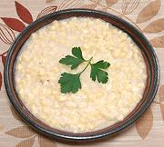

|
Double Corn Side DishCalifornia | ||||
| Serves: Effort: Sched: DoAhead: |
4 side ** 45 min Yes |
This recipe provides more flavor and a more subtle texture than plain corn kernels, as well as improved seasoning. The photo example was made with white corn. Makes 2-1/2 cups | |||
|
4 3 1/2 1/2 1/4 ----- ar |
cob T c t t ----- |
Sweet Corn (1) Butter (2) Broth (3) Salt Pepper -- Garnish Parsley |
Prep - (20 min)
|